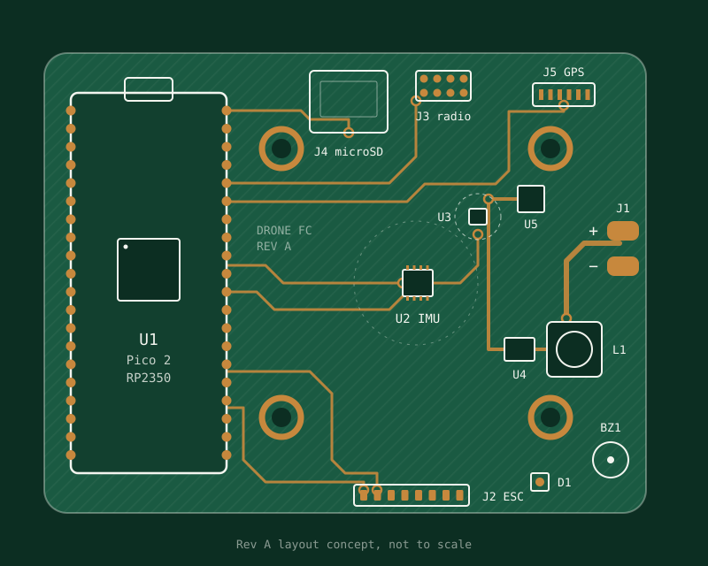

How it works
A quadcopter can't fly on its own. It's balanced on four spinning motors and would flip in a fraction of a second without a computer correcting it constantly. This page explains how mine does that.
The big picture
One board I design flies the drone. The laptop sends commands and watches, but never flies it directly: if the laptop crashes, the drone still keeps itself level.
Staying level, 1,000 times a second
Every millisecond, the flight controller runs the same loop. It reads the motion sensor, works out which way the drone is tilted, compares that with where it should be, and nudges the four motor speeds to correct it.
The corrections come from a PID controller: the size of the error, how long it's lasted, and how fast it's changing. Tuning those three numbers is most of the work between "spins its motors" and "hovers smoothly", which is why there's a whole phase on a test rig for it.
The RP2350 chip has two cores. Core 0 does nothing but this loop, so it never misses a beat. Core 1 handles everything else: the radio, saving logs to the SD card, checking the battery and watching for problems.
The loop on core 0
- Read IMU
- Estimate angle
- Angle PID
- Rate PID
- Motor mixer
- PWM out
Why 1 kHz? The faster the loop, the smaller each correction and the smoother the flight. MicroPython can't hold that timing reliably, so the flight loop is written in C++. Everything gets prototyped in MicroPython first.
The software: three programs
Flight firmware
C++ with the Pico SDK, on the drone. The control loop, arming, failsafes, logging and the mission runner. A hardware watchdog stops the motors if the loop ever freezes.
Radio bridge
On a second Pico plugged into the laptop. It passes commands up to the drone and telemetry back down over the nRF24 radio.
Ground station
Python on my Mac (PySide6 and pyqtgraph). An artificial horizon, height, battery, motor outputs, link quality and a big kill button. Controlled with a gamepad.
Logs
Every loop is saved to the SD card: about 64 kB a second. After each flight I graph the gyro noise and PID terms before changing anything.
Flight modes
| Mode | Who's in control | How it starts |
|---|---|---|
| Disarmed | Nobody; motors stopped | Power-up, the kill button, or landing detected |
| Laptop (self-levelling) | Me: the sticks set the tilt angle and climb rate | Arm on the gamepad with a healthy radio link |
| Mission | A script on the drone | Upload and start from the ground station; touching the sticks or kill button takes over |
| Failsafe land | A script on the drone | Any of the failsafes below |
Arming needs four things at once: the arm switch, throttle low, the drone level, and a healthy link.
Failsafes
What the drone does on its own when something goes wrong.
| If this happens | The drone does this |
|---|---|
| No radio packet for 0.5 seconds | Holds level, hovers for 2 seconds, then descends at 0.5 m/s and lands. Hands control back if the link returns first. |
| Battery under 3.5 V per cell | Warns on the ground station. Under 3.3 V per cell it lands itself. |
| Above the height ceiling | Stops climbing and comes back down below it. The ceiling starts at 30 m and is never above 115 m. |
| Tilted past 60°, or the sensor stops responding | Cuts the motors. It's either crashing or flying blind. |
| Kill button pressed | Cuts the motors immediately, in any mode. |
| The control loop freezes | The watchdog resets the chip and the motors stop. |
For landing, a barometer gives height to about half a metre. Below 3 m a small laser rangefinder pointing down takes over, and the drone disarms once it reads under 5 cm and has stopped moving.
The circuit board
The first version (Rev A) is a carrier board: I design the board, and a Pico 2 module solders onto it. That keeps the fiddliest part of the chip's support circuit off my first ever PCB, while still making it a complete flight controller of my own.
It's a 4-layer board with a solid ground plane. The noisy power parts sit at one edge, and the motion sensor sits in the middle. JLCPCB solders the tiny sensor chips, and I hand-solder the rest. It also has ports ready for GPS, a compass and a camera later, so adding them won't need a new design.

| Block | Part | What it's for |
|---|---|---|
| Battery input | XT60, TVS diode, P-FET | Survives the battery being plugged in backwards, and voltage spikes |
| 5 V supply | TPS54302 / MP2315 | 3 A for the Pico, radio and future GPS and camera |
| 3.3 V sensor supply | ME6211 / AP2112 | A separate, clean supply so the motion sensor isn't noisy |
| Brain | Raspberry Pi Pico 2 | Programmed over its own USB port |
| Motion sensor | BMI270 / LSM6DSO | Gyro and accelerometer on its own SPI bus |
| Barometer | BMP390 / DPS310 | Height from air pressure, under foam to block prop wash |
| Downward range | VL53L1X | Accurate height for the last few metres of landing |
| microSD | Push-push socket | Flight logs, on a separate bus so logging never delays the sensor |
| Radio | nRF24L01+ | Plus pads for an ELRS receiver upgrade |
| Feedback | Buzzer and RGB LED | Status at a glance, and an alarm to find it in long grass |